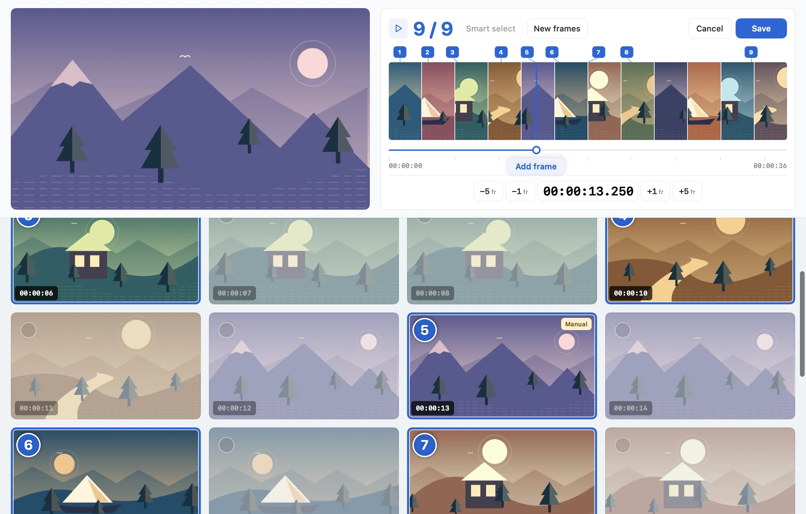

Choose and replace frames in a ShotMap storyboard
Find a moment on the timeline, pick it yourself and fill the remaining slots automatically.
The examples use ShotMap 0.2.20 on macOS 13 or later and Color Trail.mp4, a 36-second, 960 × 540 sample video. Put the video in a folder where you can save files.
- Create the 3 × 3 JPG from Color Trail.mp4, select its preview and open Select frames at the bottom right.
- Enter 00:00:13.250 in the timeline time field and press Return. Use the −1 or +1 controls to inspect neighboring frames if needed.
- Use Add frame beneath the timeline. Click the resulting frame card to select it. A numbered badge identifies the selection, and its number also appears on the timeline.
- Click Smart select to fill the other eight slots while keeping your pick. Confirm 9 / 9, then click Save.

Check the result
Check the updated storyboard preview for the chosen scene, then use Show in Finder to open the new JPG. The JPEG made before the edit stays beside the video.